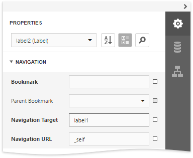
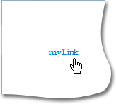
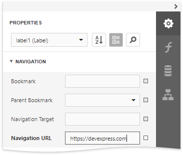
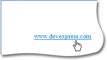

Add Cross-References and Hyperlinks
This document describes how to make an element navigate to other elements in a report or external resources by clicking it in a Print Preview.
Add Cross-References
You can improve report navigation using a cross-reference because the link's target is in the same document.
You can add a cross-reference for a report control by setting the following properties:
Set the Navigation Target property to _self to specify that the link is in the same document.
Set the Navigation Url property to the target control's Name property value.

In this case, the control behaves like a link meaning that the cursor automatically changes to a hand in a report's preview when hovering the control. You can make a control resemble a link by specifying its appearance properties (for example, change the text's color to blue and underline it).

The link uses the first occurrence if there are multiple instances of an object marked as a link's target.
Tip
A report's cross-references are preserved when exporting it to PDF.
Add Hyperlinks
A hyperlink means that a link's target is outside the report.
You can use any control as a link by setting the Navigation Url property to the required target document's URL.

Note
Remember to use the "http://" or "https://" prefix when specifying the URL.
You can make a control resemble a link by specifying its appearance properties (for instance, set the underlined text and blue color).
The cursor automatically changes to a hand when hovering the control in a report's preview.

Use the link's Navigation Target property to specify where to open the target document (in the same preview window, in a new blank window, etc.).
Tip
A link's behavior is preserved when exporting a report to most of the available formats (in particular to PDF, HTML, MHT, RTF and Excel).